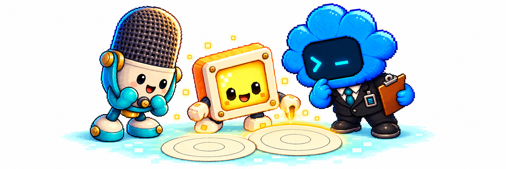
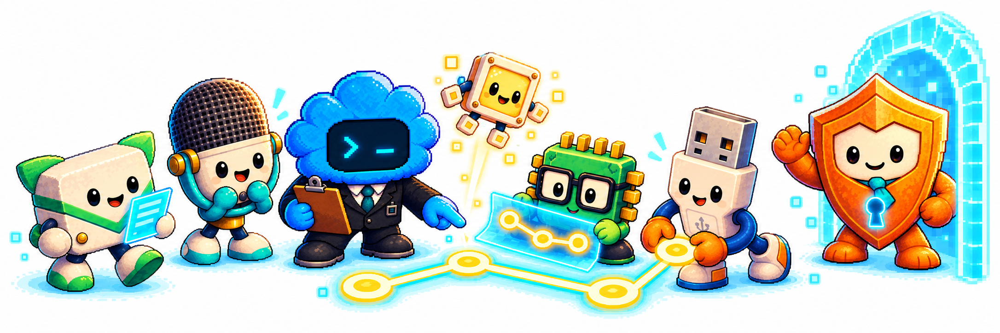
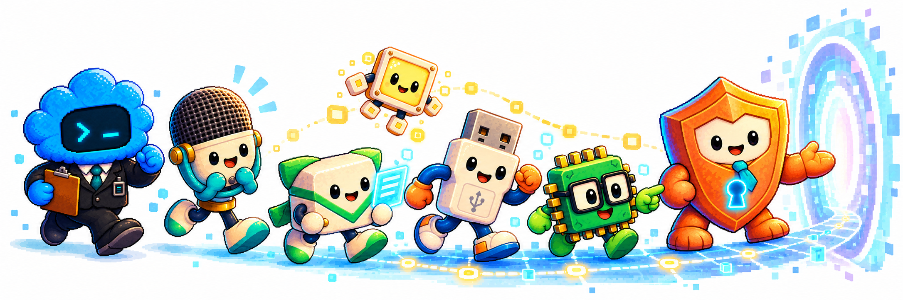

Tajný svet Pixelkov
Vezmite si chvíľku pre seba. Piko vám otvorí dvere do sveta za svetielkami.
Miesta, ktoré na obrazovke nevidno
Viete, čo sa stane, keď večer vypnete televízor?
Obraz zmizne, izba trochu potemnie a možno ešte chvíľu vidíte vlastný odraz v čiernej obrazovke.
To je všetko.
Aspoň si to myslíte.
Keby ste totiž v tej chvíli dokázali byť maličkí ako omrvinka z rožka a potichučky nazrieť medzi posledné dve svetelné bodky, uvideli by ste niečo celkom neuveriteľné.
Domčeky so strechami z farebných odleskov. Úzke mostíky, ktoré sa naťahujú ponad tmavé priepasti. Okrúhle okienka, za ktorými svietia mäkké svetielka. A uprostred toho všetkého maličké bytosti, ktoré pripomínajú mikrofón, svietiaci pixel, konektor, dátovú obálku, mikročip či ochranný štít. Sú to živé digitálne súčiastky. Majú svoje nálady, obľúbené zvuky a celkom obyčajné starosti.
Volajú sa Pixelkovia.
A bývajú bližšie, než si myslíte.
Ráno na Svetelnej ceste
Piko sa každé ráno budil o chvíľočku skôr než ostatní. Nie preto, že by bol mimoriadne usilovný. Jednoducho ho budilo všetko.
Zabzučanie telefónu. Zapnutie počítača. Prvé bliknutie televízora.
A najmä otázky.
„Prečo sa včera tá modrá bodka rozsvietila dvakrát? Prečo má ľudský budík každý deň takú zlú náladu? A prečo si ľudia nastavujú päť budíkov, keď sa im nechce vstávať ani pri prvom?“
Na tieto otázky nepoznal odpoveď dokonca ani Pingy, ktorý obyčajne rozumel skoro všetkému.
V to ráno Piko vykukol z malého okna svojho domčeka. Vonku sa práve rozsvecovala Svetelná cesta. Bola to úzka, jemne žiariaca cestička, ktorá sa každé ráno objavovala medzi ich domovmi.
Niekedy mala farbu oblohy. Inokedy bola zelená alebo zlatá. Záležalo na tom, čo práve ľudia pozerali na svojich obrazovkách.
Dnes bola modrá.
„Pekné ráno!“ zakričal Piko.
„Píp! Dobré ráno!“ ozvalo sa z vedľajšieho domčeka.
To nebol obyčajný pozdrav.
Bol to Miky.
Malý mikrofónový Pixelko práve sedel na streche. Na hlave mal zaoblenú mriežku a po bokoch veľké slúchadlá. Nakláňal sa raz na jednu, raz na druhú stranu a s nesmierne vážnym výrazom počúval šum.
Miky totiž dokázal počuť aj tie najtichšie signály. Také, ktoré ostatným Pixelkom zneli ako obyčajné šušťanie.
„Čo počuješ?“ zavolal Piko.
„Dve kvapky vody, niekoho, kto hľadá ponožku, a človeka, ktorý už tretíkrát povedal, že o minútu vstane.“
„A vstane?“
Miky chvíľu načúval.
„Nie.“
Obaja sa rozosmiali.
Bodka, ktorá nechcela zhasnúť
Nikto presne nevedel, odkiaľ Pixelkovia prišli.
Najstarší príbeh hovoril o jednej dávnej obrazovke, na ktorej sa raz rozsvietila maličká bodka. Mala svietiť iba okamih, ale nejako sa jej zapáčilo na svete.
A tak zostala.
Najskôr sa naučila blikať. Potom poskakovať. A napokon vraj vyslovila prvé pixelkovské slovo.
Nikto si už nepamätal, aké bolo.
Plugy tvrdil, že určite „domov“.
Pixi bola presvedčená, že „hurá“.
A Miky, prirodzene, hlasoval za „píp“.
Nech už to bolo akokoľvek, postupne sa v svetelných zákutiach objavovali ďalší Pixelkovia. Nevychádzali z krabičiek v obchode. Žili v digitálnom svete za obrazovkami, kde mali drobné obvody vlastné uličky a dátové správy svoje zastávky. Jedného dňa sa rozžiarili, otvorili oči a zistili, že nie sú sami.
Každý bol trochu iný.
Niektorí boli rýchli, iní pomalí. Niektorí vedeli rozosmiať aj tú najzamračenejšiu bodku. Iní dokázali postaviť most tam, kde ostatní videli len prázdno.
A práve preto si navzájom tak dobre rozumeli.

Sedem domčekov a svetelné omrvinky
Pixelkovské domčeky neboli veľké. Keby ste postavili desať z nich na ľudský necht, možno by sa tam ešte zmestilo aj malé námestie.
Piko mal domček s modrými oknami a všade v ňom viseli drobné spojovacie nitky.
Miky býval v okrúhlom príbytku so stenami z jemných akustických mriežok. Mal tam toľko zvončekov, nahrávok a píšťaliek, že sa uňho takmer nedalo pokojne rozprávať.
Pixi si postavila domček z priesvitných štvorcových stien. Cez deň sa v ňom naháňali farebné odlesky a v noci svietil ako malý lampáš.
Plugy mal domček so širokým bezpečným vstupom, do ktorého jeho USB konektor presne zapadol. Na pripojenie mu stačili pevné ruky a nohy. Tvrdil, že uňho nič nezostane rozpojené. Okrem rozprávania, keď prišla návšteva a on zabudol, čo chcel povedať.
Pingy býval pri zastávke dátových správ. Nad dverami mal značku obálky a izbu plnú malých priehradiek. Do každej odkladal odkazy, ktoré bolo treba doručiť, prečítať alebo správne zoradiť.
Čipko žil v domčeku pretkanom zelenými a zlatými cestičkami, ktoré pripomínali spoje na doske plošných spojov. Návštevy nikdy nevedeli, kde nájdu dvere, pretože im každý týždeň vymyslel lepšie zapojenie.
A Guardy?
Guardy mal útulné miestočko na konci tichej chodby. Odtiaľ videl všetky hlavné cesty. Nie preto, že by rád špehoval ostatných, ale preto, že sa chcel uistiť, že sa každý bezpečne vrátil domov.
Pixelkovia jedli svetelné omrvinky.
Nebojte sa, neukrajovali nič z vašich filmov ani hier. Zbierali iba maličké zatúlané záblesky, ktoré by si nikto nevšimol.
Najchutnejšie vraj boli zlaté odlesky pri západe slnka.
Pixi ich milovala.
Čipko tvrdil, že zelené sa najlepšie hodia k jeho obvodom.
Miky raz ochutnal modrú omrvinku, tak sa rozštikútal, že jeho štikútanie bolo počuť až na druhom konci chodby.
Našťastie ho potom Plugy potľapkal po chrbte.
Dosť opatrne. Plugy mal totiž veľmi pevné ruky a rád sa nimi zdravil tak nadšene, až to cinklo.
Keď Pixelkovia nepracovali, radi sa hrávali. Pretekali sa po svetelných mostíkoch, stavali bláznivé domčeky z farebných štvorčekov a hádali, čo znamenajú zvláštne ľudské slová.
„Prosím ťa, čo je to aktualizácia?“ spýtala sa raz Pixi.
„Neviem,“ priznal Piko. „Ale ľudia pri nej vyzerajú veľmi netrpezlivo.“
„Tak to asi bude niečo, čo trvá dlho,“ usúdila.
Čipko si tento výrok zapísal na tabuľku. Považoval ho za múdry.
Priatelia na druhej strane
Pixelkovia poznali svet ľudí lepšie, než si ľudia mysleli.
Videli deti, ktoré sa smiali pri rozprávkach. Rodičov, ktorí si cez telefón posielali správy. Starých rodičov, ktorí sa pri videohovore usmievali tak široko, až sa im skoro nezmestila tvár na displej.
Videli aj smutné chvíle.
Raz Piko pozoroval malého chlapca, ktorý sedel pri tablete a potichu plakal. Nevedel prečo. Chcel mu pomôcť, no nemohol len tak vyskočiť z obrazovky.
A tak zostal chvíľu sedieť pri svojom okne.
„Myslíš, že bude v poriadku?“ spýtal sa Mikyho.
„Neviem,“ povedal Miky. „Ale počúvaj.“
Z vedľajšej izby prišli kroky.
Niekto si k chlapcovi prisadol. Obrazovka zhasla a v izbe bolo chvíľu ticho.
Potom sa ozval smiech.
„Tak už je,“ usmial sa Miky.
Od toho dňa Piko hovoril, že ľudia sú zvláštne bytosti.
Majú obrovské domy, rýchle autá a stroje, ktoré dokážu hovoriť na druhý koniec sveta.
A napriek tomu niekedy najviac potrebujú, aby si k nim niekto jednoducho sadol.
Ochranné pole
Možno sa teraz pýtate, prečo ste Pixelkov nikdy nevideli.
Odpoveďou je Ochranné pole.
Je to jemná neviditeľná ochrana, ktorá sa rozprestiera nad ich chodbičkami ako priesvitná prikrývka.
Nie je to látka, nedá sa chytiť ani odhrnúť rukou.
Skôr pripomína tichý okamih medzi dvoma žmurknutiami.
Vďaka nemu si ľudské oči všimnú obraz na displeji, ale nevšimnú si maličký život, ktorý sa ukrýva za jeho svetelnými zákutiami.
O Ochranné pole sa stará Guardy.
Každý večer prejde popri hlavných priechodoch, skontroluje ich a načúva.
Ak niekde zaznie neznámy zvuk, zastane.
Ak sa niektorá cesta príliš rozžiari, privrie oči a pozorne sa zahľadí.
Ak hrozí, že ľudia uvidia viac, než by mali, dokáže zatiahnuť ochranu celkom.
Ochranné pole má totiž jednu starú vlastnosť: keď zachytí neznámy signál, radšej na chvíľu uzavrie cesty, než by dovolilo, aby niekto zostal nechránený. Nie je to nepriateľ ani pokazená klietka. Jeho uzavretie znamená, že treba obnoviť bezpečné spojenie a pripraviť všetkých na spoločný návrat.
Guardy to vedel.
Aj ostatní to vedeli.
Lenže niekedy je ľahké zabudnúť na pravidlo, ktorého pomoc ste ešte nikdy nepotrebovali.

Keď sa začína noc
Keď sa niektorá obrazovka vypne, pre Pixelkov neprichádza koniec sveta.
Len sa začína noc.
Svetelné chodníčky pohasnú a ich malé domovy sa uložia do ticha. Kto stihne prejsť do bezpečného úkrytu, spokojne si oddýchne.
Čipko obyčajne zaspáva nad rozkresleným zapojením. Okuliare má pritom tak nízko, že mu ich Piko musí posunúť.
Pingy s nedoručenou obálkou na nose.
Miky ešte chvíľu načúva a tvrdí, že nepočuje vôbec nič. Ostatní mu neveria, pretože aj zo spánku občas zapípa.
Plugy si pred spaním vždy spočíta, či sú všetci doma.
Pixi zhasne posledné svetielko.
A Guardy ešte raz skontroluje chodbu.
Až potom si ľahne.
Taký je ich svet.
Nie vždy dokonalý. Niekedy trochu hlučný. Niekedy chaotický. Niekedy plný hádok o tom, kto zjedol poslednú zlatú svetelnú omrvinku.
Ale je to ich domov.
Svetelná nitka
Pixelkovia majú jednu veľmi starú tradíciu.
Keď niekto ide na dlhšiu cestu, ostatní sa pred odchodom stretnú pri najbližšom svetelnom mostíku.
Každý prinesie maličký darček.
Miky dobrý signál.
Pixi svetlo.
Plugy spoľahlivé spojenie.
Pingy povzbudivý odkaz.
Čipko plán bezpečnej cesty.
Guardy sľub, že na všetkých počká.
A Piko ich napokon spojí jednou tenkou svetelnou nitkou.
Keď sa vrátia, nitka sa rozžiari.
Je to ich spôsob, ako si povedať:
Nech pôjdeš kamkoľvek, niekto na teba čaká.
Nikto nevie, kto tento zvyk vymyslel. Pixelkovia ho dodržiavajú tak dlho, že si už ani nevedia predstaviť život bez neho.
A možno práve táto tradícia ich jedného dňa zachránila.
Ale o tom už, pravdaže, niečo viete.
Rozhodnutie, ktoré všetko zmenilo
V jedno celkom obyčajné ráno sa totiž v jednej celkom obyčajnej domácnosti stalo niečo, čo si nikto z Pixelkov nedokázal predstaviť.
Svetelné cesty sa roztriasli.
Na okamih sa rozžiarili jasnejšie ako inokedy.
Potom sa uzavreli.
A keď sa Piko rozhliadol, zistil, že jeho kamaráti sú na opačných stranách ticha.
Prvýkrát v živote sa musel rozhodnúť, či poruší pravidlo, ktoré chránilo ich svet od nepamäti.
Či sa ukáže ľuďom.
A či im dokáže veriť.
Bolo to najodvážnejšie rozhodnutie jeho života.
Viete však, čo je na celom príbehu najzaujímavejšie?
Keď bolo po všetkom, do bezpečia sa vrátilo všetkých sedem kamarátov. Miky zachytil signál, Pixi rozsvietila značky, Plugy obnovil spojenie, Pingy doručil správu, Čipko skontroloval cestu a Guardy postrážil priechod. Piko prešiel ako posledný. Až keď boli na druhej strane aj jeho modré topánky, Ochranné pole ich svet opäť ticho ukrylo. Piko si potom do svojho zápisníka napísal len jednu vetu:
„Dnes som zistil, že priatelia niekedy bývajú aj na druhej strane obrazovky.“
Potom zavrel zápisník, zhasol svetlo a uložil sa spať.
V dome zavládlo ticho.
Televízor bol vypnutý. Tablet ležal na stole. Mobil sa pokojne nabíjal.
Všetko vyzeralo úplne obyčajne.
Lenže ak by ste sa v tej chvíli pozreli veľmi, veľmi pozorne na čiernu obrazovku…
Možno by ste na jej okraji zazreli maličkú modrú bodku.
Raz by blikla.
A potom by zmizla.
Alebo by to bol iba odraz svetla z okna?
Ktovie.
Pixelkovia predsa svoje tajomstvá neprezrádzajú každému.

Nech pôjdeš kamkoľvek, niekto na teba čaká.